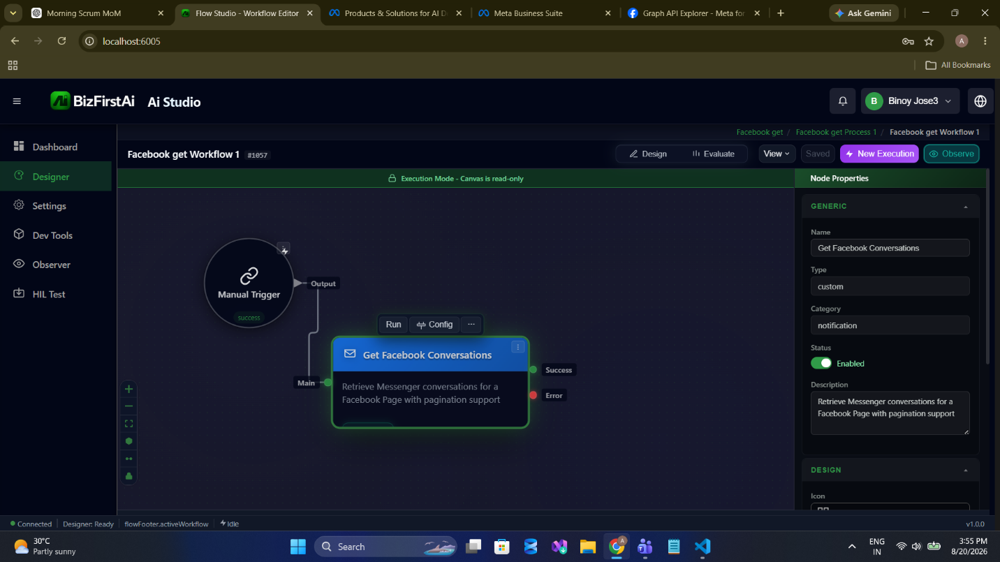
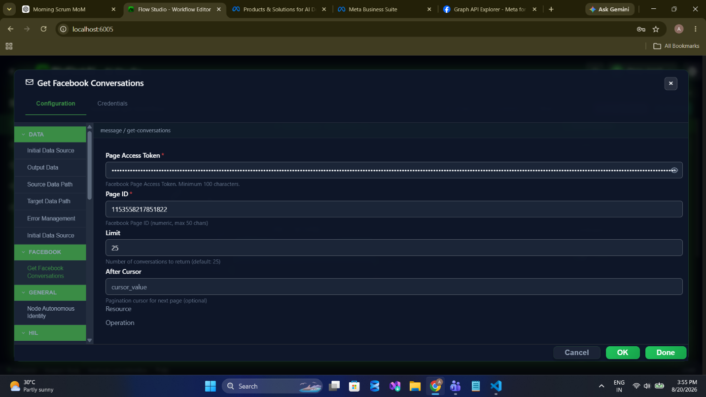
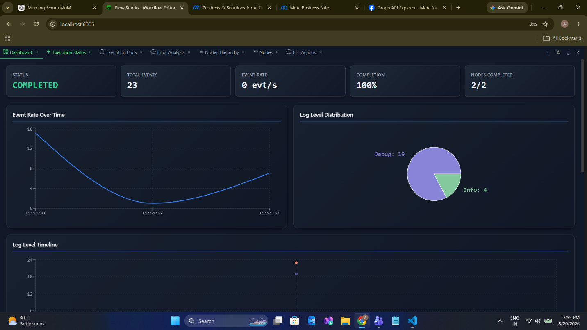
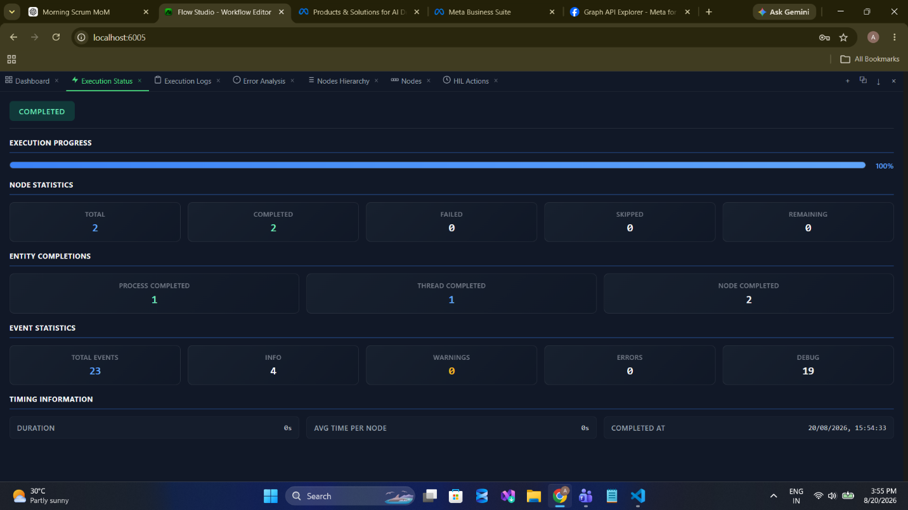
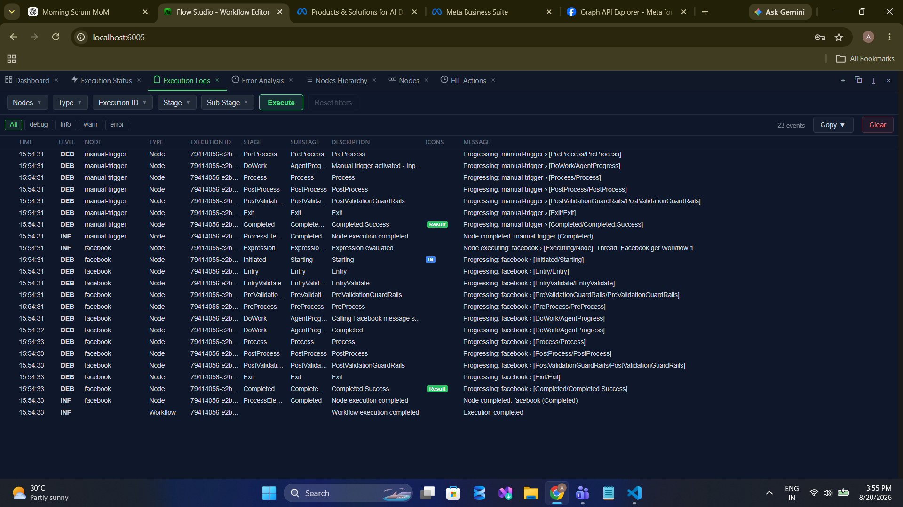
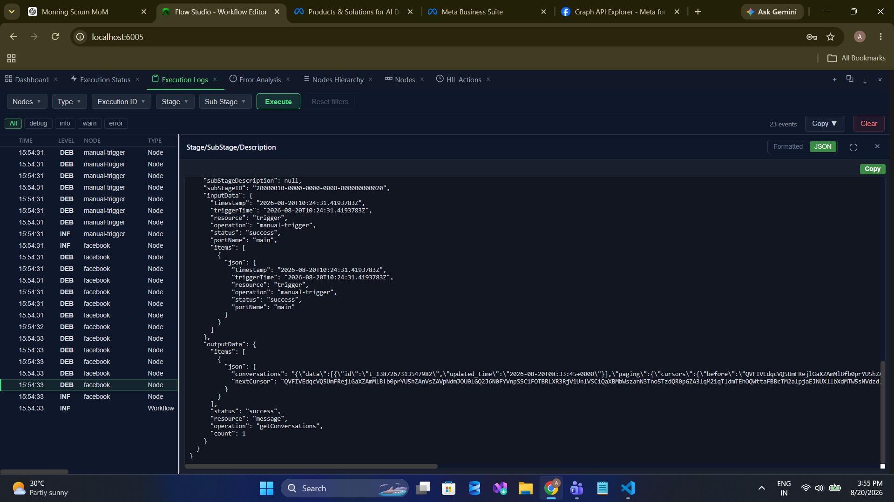

message/getConversations
List a Page's Messenger conversations with cursor pagination. The supported way to obtain a recipient PSID for message/send.
Palette name: Get Facebook Conversations · Graph call:
GET /{pageId}/conversations · Permissions: pages_messaging + pages_read_engagement · Field reference: Message Operations
When to Use
- Obtain a PSID. This is the practical prerequisite for message/send — there is no other supported way to discover a recipient ID.
- Poll the inbox. With no Facebook trigger, a Scheduled Trigger plus this node is how a workflow notices new Messenger activity.
- Detect stale threads. Compare
updated_timeagainst now, and alert when a conversation has gone unanswered. - Report on volume by recording the conversation count on a schedule.
Walkthrough
1Place the node

2Configure

message / get-conversations. Unlike message/send, this operation does take a Page ID.3Run



4Read the output

conversations — it is an escaped JSON string containing Graph's data array and paging.cursors, not a parsed array. count sits at the top level beside status.Configuration
| Field | Required | Description |
|---|---|---|
resource | Required | Must be message. |
operation | Required | Must be getConversations. |
pageAccessToken | Required | Page access token, or a stored credential. |
pageId | Required | Numeric Page ID. |
limit | Optional | Conversations per page. Defaults to 25. |
after | Optional | Cursor from a previous run's nextCursor. Blank fetches the first page. |
Fields requested from Graph are fixed: id, subject, wallpaper, formatted_message_count, updated_time.
This lists conversations, not messages. The message bodies are not included in the response. To read the messages inside a thread you need a further Graph call that this node does not expose — use an HTTP Request node against
/{conversationId}/messages.
Output
| Field | Type | Description |
|---|---|---|
status | string | "success" |
count | number | Conversations in this page of results. Top level. |
items[0].conversations | string | Entire Graph response serialised as JSON text. "[]" when empty. |
items[0].nextCursor | string | Cursor for the next page, or "" when exhausted. |
{
"status": "success",
"resource": "message",
"operation": "getConversations",
"count": 1,
"items": [
{
"conversations": "{\"data\":[{\"id\":\"t_1387267311547902\",\"updated_time\":\"2026-08-20T08:33:45+0000\"}],\"paging\":{\"cursors\":{\"before\":\"QVFIU...\",\"after\":\"QVFIV...\"}}}",
"nextCursor": "QVFIV..."
}
]
}Extracting a PSID
Parse the conversations string, then read the participant ID out of the thread. A Function or Code Execute node does this in one step:
const raw = $input.items[0].conversations;
const feed = JSON.parse(raw);
return feed.data.map(thread => ({
conversationId: thread.id,
updatedTime: thread.updated_time,
messageCount: thread.formatted_message_count
}));Feed the resulting participant ID into message/send as recipientId.
Paginating
// First pass
{ "resource": "message", "operation": "getConversations",
"pageId": "1153558217851822", "limit": 25, "after": "" }
// Subsequent passes
{ "resource": "message", "operation": "getConversations",
"pageId": "1153558217851822", "limit": 25,
"after": "{{ $output.previousPage.items[0].nextCursor }}" }Stop when nextCursor is "" or count is 0.
Notes and Cautions
- Token validation is lighter here — only a non-blank check, not the 100-character minimum some other operations enforce.
- Conversation contents are personal data. Apply the same handling rules to Messenger threads that you would to any customer record, and avoid writing message content into logs.
- Polling costs quota. Choose the slowest interval the use case tolerates. See Rate Limits.
Related
- message/send — the operation this one feeds
- Input & Output — why the result is a string
- Examples — an inbox auto-acknowledge workflow